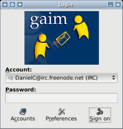

Join the IRC chat (Gaim)
|
After the initial setup, you should see your newly created
account from the Account menu in the login window. Click on Sign on. |
 |
| You will see the Buddy List appear. Select Buddies > Join a Chat. |  |
| Under Channel, type #ooonlc (there is no password). Then click on Join. |
Congratulations!
You have now joined the IRC community and are ready to chat with your OOo friends.